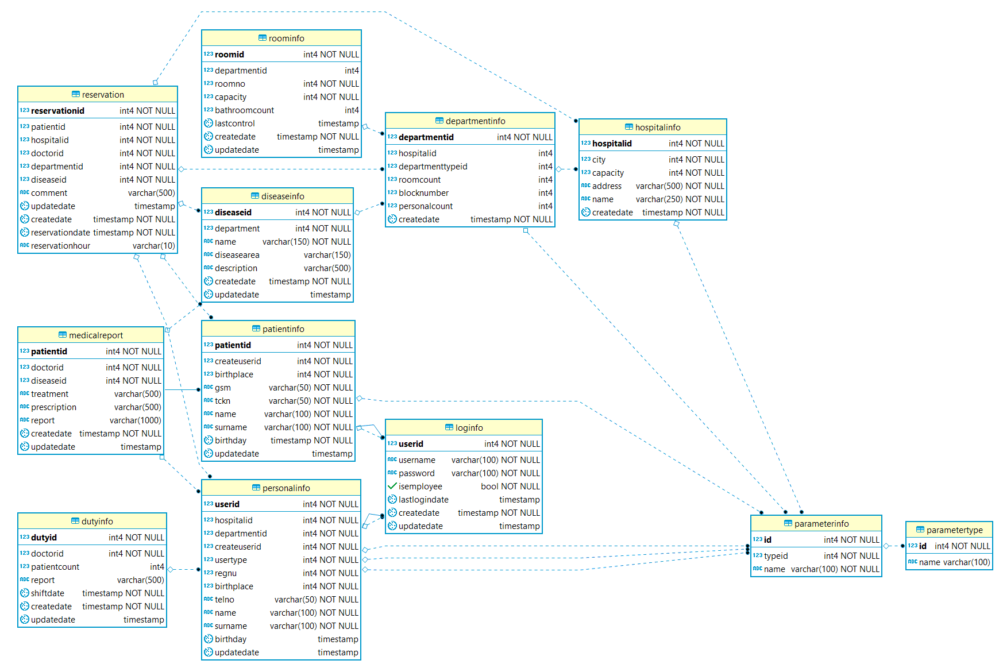

2. Development Process¶
2.1. Database Design - Entity-Relationship Diagram¶
This project consist of twelve main tables and two sub tables. The connection of the tables as well as their attributes are shown in the E-R Diagram below.

E-R Diagram
- 2.1.1. Parts Done By Orhan Kurto
- 2.1.2. Parts Done By Bilal Can
- 2.1.3. Parts Implemented by Utku Anil Saykara